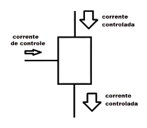
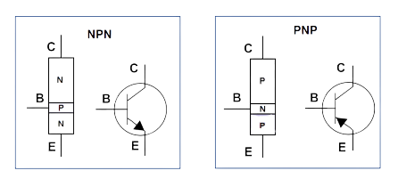
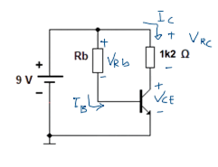

O transistor bipolar, também chamado de BJT, é um dos componentes mais importantes da eletrônica. Ele é como uma chave inteligente ou um controlador de corrente: com uma corrente pequena na base, dá pra controlar uma corrente muito maior entre o coletor e o emissor.
Ele é formado por três partes: emissor (E), base (B) e coletor (C). A base é bem fininha e funciona como uma “porta de controle”, que decide se o transistor vai deixar a corrente passar ou não.
Existem dois tipos de transistores: o NPN e o PNP. Eles são praticamente iguais, só muda o tipo de material e o sentido em que a corrente flui.
Resumindo: o NPN “liga” quando a base é positiva, o PNP “liga” quando a base é negativa. O funcionamento é o mesmo — só muda o sentido da corrente.
Pensa no transistor como uma torneira: a corrente que vem do emissor é a água, e a base é a mão que gira o registro. Quanto mais corrente entra na base, mais corrente o transistor deixa passar do coletor para o emissor.
Ele pode trabalhar de três jeitos diferentes:
Pra o transistor funcionar, ele precisa estar “alimentado” do jeito certo. A isso a gente chama de polarização.
No caso do transistor NPN, a base precisa estar cerca de 0,7 V acima do emissor pra começar a conduzir — esse é o famoso VBE.
A corrente de coletor (IC) é controlada pela corrente da base (IB), e existe uma relação entre elas:
IC = β × IB
O β (ou hFE) é o quanto o transistor multiplica a corrente da base — é o seu “ganho”.
Um dos usos mais comuns do transistor é como chave eletrônica. Ele funciona ligando ou desligando um circuito, controlando cargas como LEDs, motores, ou relés.
É basicamente o mesmo que apertar um interruptor, só que eletrônico e controlado por uma tensão na base.
O transistor de potência é como uma versão “forte” do transistor comum. Ele serve pra controlar correntes e tensões bem maiores, como motores ou lâmpadas.
Como ele esquenta bastante, normalmente é montado com um dissipador de calor pra não queimar. Mas o princípio é o mesmo: uma corrente pequena na base comanda uma corrente grande no coletor.
Considere o circuito abaixo:
Passo 1 – Corrente de base:
IB = (VCC − VBE) / RB = (9 − 0,7) / 220 k = 8,3 V / 220 000 Ω = 37,7 µA
Passo 2 – Corrente de coletor:
IC = β × IB = 130 × 37,7 µA = 4,9 mA
Passo 3 – Corrente de saturação:
IC(sat) = (VCC − VCE(sat)) / RC
Considerando VCE(sat) ≈ 0,2 V → IC(sat) = (9 − 0,2) / 1,2 k = 8,8 V / 1200 Ω = 7,3 mA
Passo 4 – Verificando a região de operação:
Como IC = 4,9 mA é menor que IC(sat) = 7,3 mA, o transistor não está saturado — ele opera na região ativa.
Passo 5 – Tensão coletor-emissor:
VCE = VCC − (IC × RC) = 9 − (4,9 mA × 1,2 k) = 9 − 5,9 V = 3,1 V
Por que o transistor não está na região de corte?
Na região de corte, o transistor estaria completamente desligado — ou seja, a corrente de base seria praticamente zero e não haveria corrente no coletor (IC ≈ 0).
Mas neste caso, há uma corrente de base de 37,7 µA e uma corrente de coletor de 4,9 mA, o que mostra que o transistor está conduzindo. Logo, ele está ativo, controlando a corrente do coletor por meio da corrente da base.
Conclusão: O transistor está em região ativa, pois conduz corrente, mas ainda não atingiu a saturação. Se aumentássemos a corrente de base (diminuindo RB), o transistor entraria em saturação e funcionaria como uma chave completamente ligada. Se removêssemos a corrente de base (abrindo o circuito da base), ele entraria em corte e se desligaria totalmente.
O transistor é tipo um “portão eletrônico” da corrente. Ele pode amplificar sinais, funcionar como chave e controlar cargas grandes com correntes pequenas.
Os dois tipos — NPN e PNP — funcionam igual, só mudam o sentido da corrente. Entender bem isso é o primeiro passo pra dominar a eletrônica analógica e criar circuitos cada vez mais inteligentes.